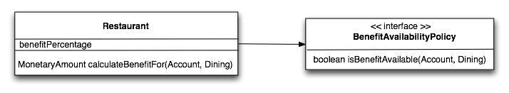
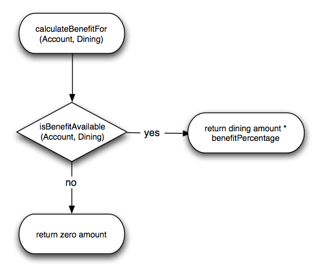
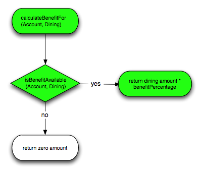
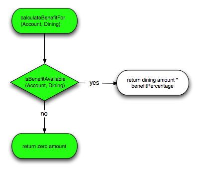
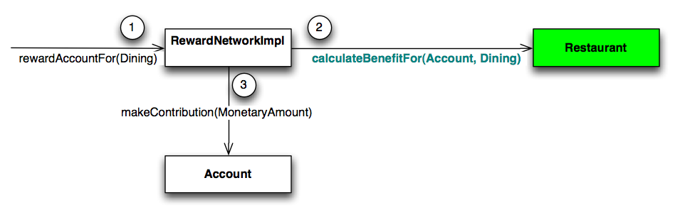
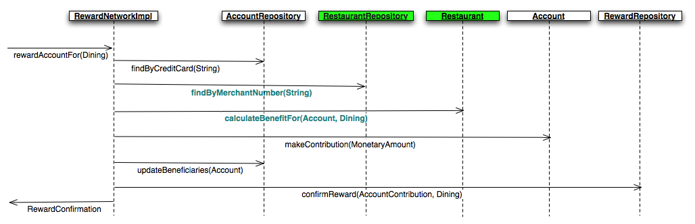
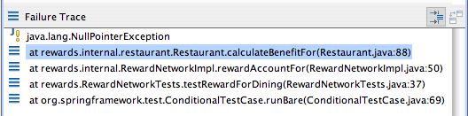
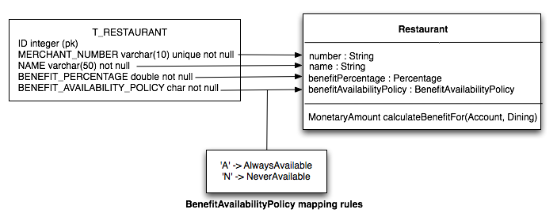

In this lab you will enhance the rewards application, then unit test your enhancement with JUnit. Once you verify your enhancement works in isolation, you'll run system tests to verify it integrates properly into your application. You'll also see how Spring's system test support library can be used to simplify and improve the performance of your system tests.
What you will learn:
How to write JUnit test scenarios
How to create stubs
The recommended way of system testing an application configured by Spring
Specific subjects you will gain experience with:
JUnit
Spring's TestContext framework
Estimated time to complete: 30 minutes
Recall that a Restaurant is responsible for
calculating how much benefit to reward an account for dining:
 |
Figure 1: The Restaurant is asked (2) to calculate how much money to reward an Account for Dining
This is because benefit calculation rules are specific to each restaurant. For example, some restaurants may reward more than others. By putting this logic in the Restaurant object, you encapsulate restaurant-specific business rules and can change them without impacting the rest of the application.
See for yourself. Open your
RewardNetworkImpl in the
rewards.internal package and navigate to where
restaurant.calculateBenefitFor(Account, Dining)
is called. Then open the method declaration (F3) and review the current
implementation:
public MonetaryAmount calculateBenefitFor(Account account,
Dining dining) {
return dining.getAmount().multiplyBy(benefitPercentage);
}This implementation simply multiplies the total dining amount by a percentage to calculate the benefit amount. Restaurants can then have different benefit percentages to affect how much they are willing to reward. For example, Apple Bee's might offer a 8% benefit, while Bennigan's only offers 4%.
The current implementation isn't quite enough, though. You see,
restaurants have strict policies about when benefit is available and
when it is not. Some of these policies can get complex. For example,
AppleBee's only rewards benefit for dining on week days when the total
amount already rewarded to an account has not exceeded the monthly
maximum. In this section you will enhance your
Restaurant implementation to support this benefit
availability policy requirement, then unit test your enhancement using
JUnit.
One way to isolate the complexity and variability in a business
policy is to introduce a strategy interface that
encapsulates it. In this step you'll introduce a restaurant
BenefitAvailabilityPolicy strategy that
encapsulates the availability calculation on a
restaurant-by-restaurant basis. You'll then delegate to the policy
inside your calculateBenefitFor(Account,
Dining) method.
|  |
Figure 2: A Restaurant with a Benefit Availability Policy
Time to get started. Turn to your
test-1-start project in Eclipse. You'll see the
BenefitAvailabilityPolicy interface
already exists in the restaurant package. Quickly
review it, then open your Restaurant class
where you'll see two TODOs to complete. Complete the first by adding a
private field for the benefit availability policy and generating a
getter and setter so it can be configured. Complete the second by
incorporating the policy into your benefit calculation logic as
follows:
|  |
Figure 3: Enhanced calculateBenefitFor(Account,
Dining) logic
![[Tip]](images/tip.png) | Tip |
|---|---|
The |
When you have completed your enhancement, move on to the next step!
You just enhanced your Restaurant class
to apply a benefit availability policy, but how do you know your
enhancement works? You don't, not without a test that proves it. In
this step you will unit test your Restaurant
class to verify your enhancement is correct.
You're in luck - this lab already has a unit test started for
you. Open RestaurantTests in the
rewards.internal.restaurant package within the
src/test/java source folder to review it. You'll
see it is already a JUnit 4 Test and is already setting up some test
fixtures for you. You'll also see several TODOs for you to
complete.
First run the test as-is. You'll see it succeed, as both its test methods are empty: the test logic has yet to be written.
Before diving into writing your test methods, complete the first
TODO to setup your test fixtures. In a set up method (annotated with
@Before), create a new Restaurant object and
assign it to a private field. Pass it your own merchant number and
name. Set your own benefit percentage. This is the unit you will use
in your test methods.
| Tip |
|---|---|
The |
Once you've setup the Restaurant fixture, it is time to write your some tests. First, ask yourself what scenarios are there to test for? That will determine how many test methods you need. See the following visualizations of the logic flow:
|  |
Figure 4: Scenario 'benefit available'
|  |
Figure 5: Scenario 2 'benefit not available'
From Figures 4 and 5 you can see there are two distinct scenarios to test for: 'benefit available' and 'benefit not available'.
In RestaurantTests, complete the second
TODO by implementing a test method that tests the 'benefit available'
scenario shown in Figure 4.
| Tip |
|---|---|
To exercise the 'benefit available' scenario, configure a
dummy |
| Tip |
|---|---|
Verify the returned benefit amount with JUnit's
|
Once your test method is written, re-run your test case. When you have the green bar, congratulations! When benefit is available your benefit calculation logic works as expected.
Now complete the third TODO by implementing a test method to test the remaining 'benefit not available' scenario shown in Figure 5. When you have the green bar for both test scenarios, you have complete code coverage. Move on to the next step!
So far you have verified your enhanced
Restaurant implementation works in isolation.
However, you have not verified if the rewards application applies your
new enhancement correctly. In the following steps, you will run system
tests to ensure your work is successfully integrated into the rewards
application.
Where in the application is the Restaurant
unit touched? That will help determine what other tests need to be run.
Recall the RewardNetworkImpl uses a Restaurant to
calculate the benefit amount for a reward transaction:
|  |
Figure 7: A Restaurant calculating the benefit amount to reward
So that's one place. But how does this Restaurant object get created before it is used? Who is in charge of that? What are the lifecycle semantics?
All restaurant data is stored centrally in the database, where
each restaurant entity is tracked by an unique merchant number and may
be updated by other applications. Therefore, for each reward transaction
a Restaurant needs to be restored from its
database representation, asked to do the benefit calculation, then go
out of scope. The reward network delegates to a data access object (DAO)
called a "repository" to do this. The repository encapsulates the data
source implementation and the complexity of the object restoration
logic. This is highlighted below:
|  |
Figure 8: The RestaurantRepository restoring a Restaurant tracked by its merchant number
So clearly there are two areas in your application where the
Restaurant unit is touched. A Restaurant is:
Restored by the
RestaurantRepository.
Used by the RewardNetworkImpl.
In the following steps you'll see if any change is needed in these areas to support your enhancement.
A good first test would be to verify if the rewards application
still works as a whole since your enhancement. Run
RewardNetworkTests in the root
rewards package in the test tree. What do you see?
You should see the red bar indicating test failure. Something went
wrong.
Now, figure out what went wrong. Inspect the failure trace by double clicking on the top of the stack (as shown below). This will take you to the line where the exception was thrown.
|  |
Figure 9: RewardNetworkTests failure trace
So what happened? Clearly a
NullPointerException was thrown because the
Restaurant's benefitAvailabilityPolicy reference
was null. What component of the application is responsible for setting
this reference? The
RestaurantRepository is responsible for
this, as part of restoring a Restaurant object from its persistent
form. Clearly the repository implementation didn't do the restoration
correctly. There must be a bug.
Time to investigate. First, determine the
RestaurantRepository implementation in use in
your application. To do this, in the Spring Beans view, graph your
systemTest config set. Then double click on the
restaurantRepository bean. Note the class of the
bean definition. In the next step you will fix the bug in this class
to properly restore Restaurant benefit availability policies.
In this step you will fix the
RestaurantRepository implementation in
use, JdbcRestaurantRepository, to properly map
the benefit availability policy from the restaurant's database
representation.
Open JdbcRestaurantRepository in the
restaurant package. First, confirm that it is not
mapping a restaurant
BenefitAvailabilityPolicy from the
result set. You can confirm this by navigating to where the
mapRestaurant(ResultSet) method is called and
opening its declaration. Within the method body, you'll see other
properties being mapped such as the name and benefit percentage, but a
TODO asking you to map the benefit availability
policy.
The restaurant mappings rules that should be followed are shown below:
|  |
Figure 9: The Restaurant relational-to-object mapping rules
Complete the TODO by mapping the value of the
BENEFIT_AVAILABILITY_POLICY column to the
corresponding BenefitAvailabilityPolicy instance;
then, setting the instance as the value of the restaurant's
benefitAvailabilityPolicy property. Use the
mapBenefitAvailabilityPolicy(ResultSet)
method to help you do this (hint: NeverAvailable
and AlwaysAvailable are the class names of the
corresponding policies). Doing this will complete restoration of the
Restaurant so it can do its job.
When you have applied this fix, move on to the next step!
With the fix applied you are now ready to re-test your
application. Re-run RewardNetworkTests. Verify
you now get the green bar. The test exercises a 100.00 dining at
restaurant '1234567890' with a 8% benefit percentage and availability
policy of 'A' - Always Available, so if your test is passing a reward
of 8.00 is being confirmed as expected!
| Tip |
|---|---|
Review the |
When you have the green bar, you've completed this section! You've successfully integrated your restaurant enhancement into the application with basic support for 'A' Always Available and 'N' Never Available benefit availability policies driven by relational data.
Spring provides system test support classes as part of its
spring-test library. In this section, you'll refactor
your existing RewardNetworkTests class to take
advantage of this support. You'll see how this support simplifies your
test setup code, as well as improves test performance.
One of the central components in the TestContext framework is the SpringJUnitClassRunner. In this step, you'll tell JUnit to run your test with it and then refactor your test as necessary to work with it.
Return to your RewardNetworkTests class
and add an @RunWith annotation to it
passing in SpringJUnit4ClassRunner.class as the
runner. Be sure to use Ctrl+Space to get code
completion on this long class name (for example, by typing
SpJ in the RunWith annotations value and then
pressing Ctrl+Space)
Once you have told JUnit to use Spring's TestRunner to run this test you can start telling Spring what to do to setup your test fixture. You will do this using annotation based dependency injection and specific test meta data.
To complete the refactoring you need to make two changes. First,
annotate the test with
@ContextConfiguration.
Set the locations property of the annotation
to the same String[] you defined in your
setUp method. Then, delete the original
setUp method as it is no longer needed.
Spring's test runner will automatically create (and cache) an
ApplicationContext for you.
Now run your test. It should fail with the red bar because your
rewardNetwork field is now null. Look over your
test code: the field is clearly not being set now.
One more change left to make. It's an easy one: simply annotate
the rewardNetwork field with
@Autowired.
Now when you run your test the test runner's setup logic will
use auto-wiring on your test class to set values
from the ApplicationContext. This means
your rewardNetwork will be assigned to the
RewardNetwork bean from the context
automatically! The autowiring is based on the type, but can be fine
tuned using qualifiers.
Re-run your test in Eclipse and verify you get a green bar. If
so, the rewardNetwork field is being set properly
for you. If you don't see green, try to figure out where the problem
lies. If you can't figure it out, ask the instructor to help you find
the issue.
When you have the green bar, congratulations, you've completed
this lab! You've successfully integrated an enhancement to the rewards
application, and at the same time simplified your system test by
leveraging Spring's test support. In addition, the performance of your
system test has improved as the
ApplicationContext is now created once per test
case run (and cached) instead of once per test method.
| Tip |
|---|---|
@ContextConfiguration assumes a default XML file name of
|
| Tip |
|---|---|
Also notice that this is the first time we've used the
|